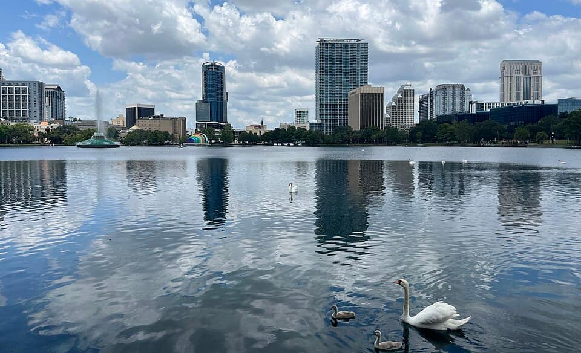
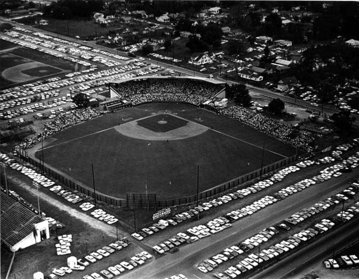
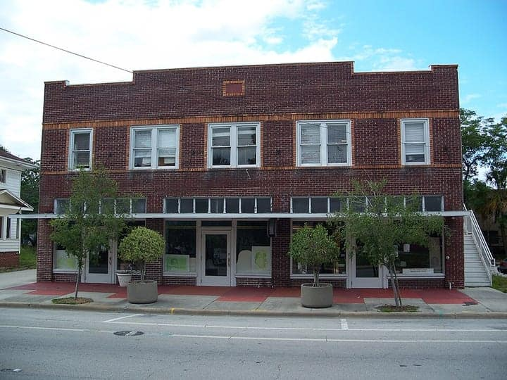
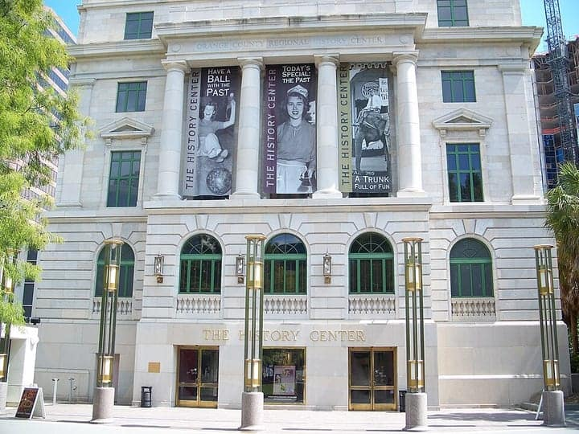
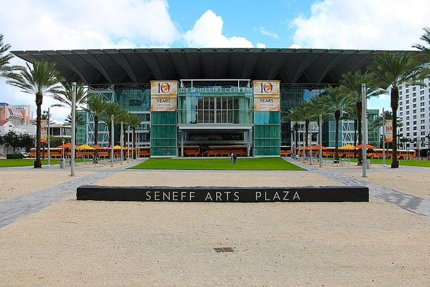

United States
Orlando
the parks ride by ride, Mills 50, the springs & the Space Coast
392 places · 18 areas · every one sourced, pinned and status-checked · last checked · 2 closed, kept for the record. Ordered by tier, then by number of named sources. How we choose
gator · Charles Hosmer Morse Museum of American Art

Start with

Downtown Orlando & Thornton Park 40 places · area 1 of 18
Lake Eola, Parramore, Church St

Photo: Barbara Jay · CC0 1.0 · Wikimedia Commons (resized) 1 Must see within Downtown Orlando & Thornton Park
Tinker Field History Plaza
NRHP-listed former ballpark where Dr. Martin Luther King Jr. gave his only Central Florida speech ("Integration Now", 6 March 1964) from the pitcher's mound; the city opened the Tinker Field History Plaza with a King bust and history markers in 2018 beside Camping World Stadium.
Look for tinker field mlk civil rights history plaza baseball nrhp
287 S Tampa Ave, Orlando, FL 32805
Recommended by , , +1,
-
2 Must see within Downtown Orlando & Thornton Park · American
Maxine's on Shine
Voted Best Downtown Restaurant and Best Brunch in Orlando Weekly's Best of Orlando 2026 readers' poll, and a MICHELIN Guide-listed Colonialtown neighborhood bistro. Order: Fried green tomatoes with crab cakes.
337 N Shine Ave, Orlando, FL 32803
Recommended by , ,
-
3 Must see within Downtown Orlando & Thornton Park · American
The Tap Room at Dubsdread
Voted Best College Park Restaurant in Orlando Weekly's Best of Orlando 2026 readers' poll; the clubhouse grill at the historic Dubsdread golf course, famed for its half-pound burger (Tasty Chomps). Order: Tap Room classic cheeseburger.
549 W Par St, Orlando, FL 32804
Recommended by , ,
-
4 Must see within Downtown Orlando & Thornton Park
Lake Eola Park
Downtown Orlando's signature park: the lit Linton E. Allen Memorial Fountain, swan boats and a resident swan flock, and the Sunday farmers market.
Look for park lake fountain icon free
Lake Eola, Downtown Orlando, FL
Recommended by ,

Photo: Ebyabe · CC BY 2.5 · Wikimedia Commons (resized) 5 Must see within Downtown Orlando & Thornton Park
Wells'Built Museum of African American History and Culture
1921 Parramore hotel for Black travellers barred from segregated hotels — guests included Ella Fitzgerald and Ray Charles — now a museum of Orlando's Black history. NRHP-listed.
Look for museum historic nrhp history
Parramore District, Downtown Orlando, FL
Recommended by ,

Photo: Ebyabe · CC BY 2.5 · Wikimedia Commons (resized) 6 Must see within Downtown Orlando & Thornton Park
Orange County Regional History Center
Smithsonian affiliate in the 1927 courthouse telling 12,000 years of Central Florida history.
Look for museum history historic
Downtown Orlando, FL
Recommended by ,

Photo: Connor J. Williams · CC BY 2.0 · Wikimedia Commons (resized) 7 Must see within Downtown Orlando & Thornton Park
Dr. Phillips Center for the Performing Arts
Glass-walled performing-arts centre (2014) hosting Broadway tours, the Orlando Ballet and concerts.
Look for performing arts theater concert
Downtown Orlando, FL
Recommended by ,
-
8 Must see within Downtown Orlando & Thornton Park · Desserts
Jeff's Bagel Run
Won Best Bagel Shop in Orlando Weekly's 2026 Best of Orlando readers' poll; WFTV covered its growth from a Winter Garden home bakery to a local chain (College Park shop listed). Order: New York-style bagel.
4339 Edgewater Dr, Orlando, FL 32804
Recommended by ,
-
9 Must see within Downtown Orlando & Thornton Park · Breweries
Hanson's Shoe Repair
Password-entry speakeasy in an 1894 cobbler's building, on Orlando Weekly's '19 best speakeasies in Orlando' and News 6's hidden Central Florida bars list. Order: Password-only classic cocktails.
27 E Pine St, Orlando, FL 32801
Recommended by ,
-
10 Must see within Downtown Orlando & Thornton Park · American
The Pinery
MICHELIN Bib Gourmand (Florida guide): lakeside dining room over Lake Ivanhoe named for Orlando's pineapple-growing past; Michelin singles out the smoked peanut soup and pimento-cheese bread board. Visit Orlando Michelin roundup also lists it in Ivanhoe Village. Order: Smoked peanut soup; bread board with pimento cheese.
295 NE Ivanhoe Blvd, Orlando, FL 32804
Recommended by ,
-
11 Must see within Downtown Orlando & Thornton Park · American
Nikki's Place
Parramore's living landmark: opened 1949 as Roser's Restaurant, it fed chitlin'-circuit musicians, athletes and civil-rights leaders; renamed Nikki's Place in 1999 and reopened in 2017 after a 2015 fire with city grants. Orlando Weekly calls it one of Orlando's most distinctive meat-and-threes; Scott Joseph reviewed it on WMFE. Order: Meat-and-three: oxtails, chitterlings, fried pork chops, catfish.
742 Carter St, Orlando, FL 32805
Recommended by ,
-
12 Worth the detour within Downtown Orlando & Thornton Park
Rogers Building (CityArts)
Downtown's oldest building (1886) — a Queen Anne-style English gentlemen's club built by Gordon Rogers, NRHP 1983; donated to the city in 2018 as the Rogers-Kiene Building and home to CityArts' seven galleries (Clio; Visit Orlando; Orlando Weekly).
Look for historic architecture art gallery 1886 NRHP
37-39 S Magnolia Ave, Orlando, FL 32801
Recommended by , ,
-
13 Worth the detour within Downtown Orlando & Thornton Park · Desserts
Craft & Common
Downtown espresso bar-plus-home-goods shop in the old Java Lava space, covered by Orlando Weekly and Bungalower and included in Tasty Chomps' best local coffee shops guide. Order: Wild Child Latte (rose-cardamom).
47 E Robinson St Unit 100, Orlando, FL 32801
Recommended by , ,
-
14 Worth the detour within Downtown Orlando & Thornton Park · American
The Monroe
Creative Village comfort-food restaurant named for Wells'Built founder Dr. William Monroe Wells; Orlando Weekly named it a best opening of 2021 and voted it #3 Best Downtown Restaurant in Best of Orlando 2025, and The Infatuation recommends its fried chicken.
448 N Terry Ave, Orlando, FL 32801
Recommended by , ,
-
15 Worth the detour within Downtown Orlando & Thornton Park · Italian
Turci Pasta
College Park handmade-pasta restaurant profiled by Tasty Chomps and Scott Joseph, and voted #3 Best College Park Restaurant in Orlando Weekly's Best of Orlando 2025. Order: Handmade pasta; prosciutto & burrata bruschetta.
2120 Edgewater Dr, Orlando, FL 32804
Recommended by , ,
-
16 Worth the detour within Downtown Orlando & Thornton Park · American
White Wolf Cafe
Ivanhoe Village's 30-plus-year 'Orlando Classic' (Scott Joseph) — an antique shop turned cafe-bar, named for the owners' white shepherd; Orlando Weekly readers' #2 Ivanhoe Village restaurant 2025; Food Network's $40 a Day stop; Tasty Chomps snapshots. Order: giant cinnamon rolls, weekend brunch among antiques.
1829 N Orange Ave, Orlando, FL 32804
Recommended by , ,
-
17 Worth the detour within Downtown Orlando & Thornton Park
Jack Kerouac House (Orlando)
College Park cottage where Kerouac wrote The Dharma Bums (1957–58); now a writers' residency.
Look for historic odd literary
1418 Clouser Ave, Orlando, FL
Recommended by ,
-
18 Worth the detour within Downtown Orlando & Thornton Park
Church Street Station (Orlando)
1889 railroad depot with a conical tower at the heart of the Church Street bar-and-restaurant district.
Look for historic nightlife bars
Church St, Downtown Orlando, FL
Recommended by ,
-
19 Worth the detour within Downtown Orlando & Thornton Park
Orlando Public Library (Downtown)
John Johansen's 1966 Brutalist library; a corner upstairs holds the Disney Collection of park history (Atlas Obscura).
Look for architecture odd free museum collection
101 E Central Blvd, Orlando, FL
Recommended by ,
-
20 Worth the detour within Downtown Orlando & Thornton Park
Kia Center
Arena of the NBA's Orlando Magic.
Look for arena concert
Downtown Orlando, FL
Recommended by ,
-
21 Worth the detour within Downtown Orlando & Thornton Park
Angebilt Building
"The jewel of downtown Orlando": Joseph Ange's 11-storey 1923 Angebilt Hotel by Murry S. King — rooftop garden, WLOF radio on the mezzanine; NRHP-listed (Wikipedia; CRA historical marker).
Look for historic nrhp architecture 1920s skyscraper
37 N Orange Ave, Orlando, FL 32801
Recommended by ,
-
22 Worth the detour within Downtown Orlando & Thornton Park
Lake Eola Heights Historic District
One of Orlando's oldest, most architecturally mixed neighbourhoods — ~500 historic bungalows, Colonial Revivals and Queen Annes on brick streets above Lake Eola; NRHP 1992 and a city historic preservation district (Wikipedia; City of Orlando).
Look for historic neighborhood nrhp architecture walk free
Lake Eola Heights (north/east of Lake Eola), Orlando, FL 32801
Recommended by ,
-
23 Worth the detour within Downtown Orlando & Thornton Park
Wall Street Plaza
Downtown's nightlife hub since 1995 — a pedestrian block of locally owned bars and clubs (WaiTiki tiki bar, Hen House, Hooch, Monkey Bar) closed to traffic for weekend block parties (WFTV downtown bar guide; Frommer's).
Look for nightlife bars block party downtown
25 Wall St, Orlando, FL 32801
Recommended by ,
-
24 Worth the detour within Downtown Orlando & Thornton Park · Breweries
Broken Strings Brewery
Parramore taproom between Camping World and Inter&Co stadiums; WFTV and Orlando Weekly reported its 2025 reopening under the Three Odd Guys Brewing team. Order: Rotating house craft beers.
1012 W Church St, Orlando, FL 32805
Recommended by ,

Mills 50, Milk District, Audubon Park & SoDo 50 places · area 2 of 18

Winter Park, Baldwin Park & Maitland 36 places · area 3 of 18

International Drive, Dr Phillips & Restaurant Row 43 places · area 4 of 18
SeaWorld, Millenia

Magic Kingdom & the Seven Seas Lagoon resorts 23 places · area 5 of 18
Walt Disney World

EPCOT & the BoardWalk resorts 29 places · area 6 of 18
Walt Disney World

Disney's Hollywood Studios 13 places · area 7 of 18
Walt Disney World

Disney's Animal Kingdom 12 places · area 8 of 18
Walt Disney World

Disney Springs & the wider Disney resort area 13 places · area 9 of 18

Universal Studios Florida 9 places · area 10 of 18

Universal Islands of Adventure 9 places · area 11 of 18

Universal Epic Universe 11 places · area 12 of 18

Universal CityWalk & the Universal resorts 3 places · area 13 of 18
incl. Volcano Bay

Kissimmee, Celebration, St. Cloud & Lake Nona 32 places · area 14 of 18

Winter Garden, Windermere & West Orange 13 places · area 15 of 18

Sanford, Lake Mary, Mount Dora & the springs 27 places · area 16 of 18
Wekiwa, Blue Spring

East Orlando, UCF & Oviedo 9 places · area 17 of 18

Space Coast 20 places · area 18 of 18
Kennedy Space Center, Titusville, Cocoa Beach
How we choose
Every place is recommended by named sources (review-aggregator star ratings never count as the recommender), pinned to its door from a published coordinate, and status-checked. Closed places stay, flagged, so you know they’re gone.
- Must see
- The places to plan a visit around — graded within each area, not across the city.
- Worth the detour
- Strong picks, worth going out of your way for.
- Deep cut
- For the curious: smaller, odder, more local.
Within each area, places are ordered by tier, then by number of named sources — never by popularity. Numbers on the cards match the pins on the map. No ratings, prices or opening hours are shown, because the guide doesn’t hold verified ones.
210 sights and 182 places to eat across Orlando & Central Florida — Walt Disney World and Universal pinned ride by ride inside each park, and the real city beyond them: Downtown and Lake Eola, the Mills 50 Vietnamese corridor, Winter Park, Restaurant Row, Puerto Rican Kissimmee, the crystal-blue springs and the Space Coast. Each is traceable to the source that named it — Michelin, the Orlando Sentinel, Orlando Weekly, NASA, Florida State Parks and the park operators themselves.
Take Orlando with you
Every place, its sources, the Guidebook and the photos at a small size. Map tiles are not saved: offline, the map shows our own pin schematic and every place stays listed.